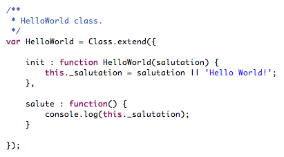
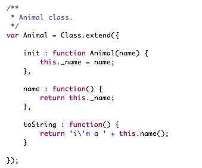
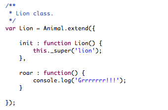
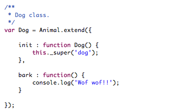
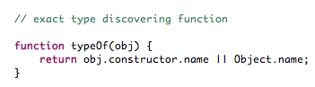
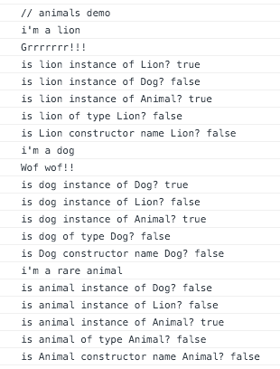

XClassJS
An eXtension on simple Class inheritance in JavaScript, from John Resig.
Hello World
The ubiquitous example... just to start with the presentation of Class use. This class just takes a salutation as an argument and outputs it by means of salute() method.
Inspect the demo code running this class here, and open the JavaScript console to see the output.
Sweet Animals
This is a quite common example too, but enough to show the little 'sweet' that XClassJS brings, with respect to the original implementation.
  Now see the following function, prepared to correctly determine the class type of an object from its constructor:

When running it on animal object instances, the results are coherent:
- in case of a Lion object (var lion = new Lion()),
typeOf(lion) returns 'Lion'
- in case of a Dog
object (var dog = new Dog()), typeOf(dog) returns 'Dog'
That's because XClassJS takes into account the name of the constructor
function, defined in the 'init' method (see the classes defined
above). And as the constructive function it is, this advantage is
taken to perfectly typify an object during its instantiation, and
later on discover its type with assertion.
Now,
when running the demo code (see output at JavaScript console) for
these examples with XClassJS, the results for the type-of discovering
function are coherent. In other words, the type of the instances is
exactly determined:
But, when running the demo code for these examples with the original Class., then the results for the type-of discovering function are not coherent (result false), that is, the exact type of the instances cannot be correctly determined:
Then...
This "lil sweet" capability of XClassJS provides an extra power to the original code, allowing the coder to exactly catch the type of an object within the inheritance tree, close - for instance - to Java with the obj.getClass().getName() flow.
To achieve this, the original code was modified to dynamically assign the name of the 'init' constructor to a named function that finally wraps the whole logic of the construction process. This new implementation can be inspected here.
As can be seen, it makes use of 'eval' to perform that dynamism, and despite the use of 'eval' is quite discouraged in most cases, in this situation, in which it only runs during the instantiation of a class (not an 'object' of that class itself), it suits to accomplish the desired goal.
Finally, it's worth mentioning that the implication it has this projection in code is the use of a named function for the 'init' constructor. On the other hand this requirement satisfies the coherence in that the constructor does not only contributes to an object instantiation, but also to its type definition ;)
 http://1nside0ut.com/xclass-js/
http://1nside0ut.com/xclass-js/
 http://github.com/1nside0ut/xclass-js
http://github.com/1nside0ut/xclass-js